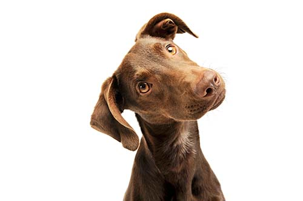

Milo

Baxter

Luna

Willow

Oliver

Bella
For almost two decades, Pets Victoria has helped in creating true social change by bringing pet adoption into the mainstream. Our work has helped make a
difference to the Victorian rescue community and thousands of pets in need of rescue and rehabilitation. But, until every pet is safe, respected, and loved, we all
still have big, hairy work to do.
Milo
Baxter
Luna
Willow
Oliver
Bella